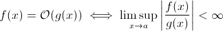

Are there any O(1/n) algorithms?
Or anything else which is less than O(1)?
Answer
This question isn't as silly as it might seem to some. At least theoretically,
something such as O (1/ n ) is completely sensible when we take the
mathematical definition of the Big O notation:

Now you can easily substitute g ( x ) for 1/ x … it's obvious that the
above definition still holds for some f.
For the purpose of estimating asymptotic run-time growth, this is less viable
… a meaningful algorithm cannot get faster as the input grows. Sure, you can
construct an arbitrary algorithm to fulfill this, e.g. the following one:
def get_faster(list):
how_long = (1 / len(list)) * 100000
sleep(how_long)
Clearly, this function spends less time as the input size grows … at least
until some limit, enforced by the hardware (precision of the numbers, minimum
of time that sleep can wait, time to process arguments etc.): this limit
would then be a constant lower bound so in fact the above function still has
runtime O (1).
But there are in fact real-world algorithms where the runtime can decrease
(at least partially) when the input size increases. Note that these algorithms
will not exhibit runtime behaviour below O (1), though. Still, they are
interesting. For example, take the very simple text search algorithm by
Horspool. Here, the expected runtime will decrease as the length of the search
pattern increases (but increasing length of the haystack will once again
increase runtime).
Suggest
Yes.
There is precisely one algorithm with runtime O(1/n), the "empty" algorithm.
For an algorithm to be O(1/n) means that it executes asymptotically in less
steps than the algorithm consisting of a single instruction. If it executes in
less steps than one step for all n > n0, it must consist of precisely no
instruction at all for those n. Since checking 'if n > n0' costs at least 1
instruction, it must consist of no instruction for all n.
Summing up: The only algorithm which is O(1/n) is the empty algorithm,
consisting of no instruction.